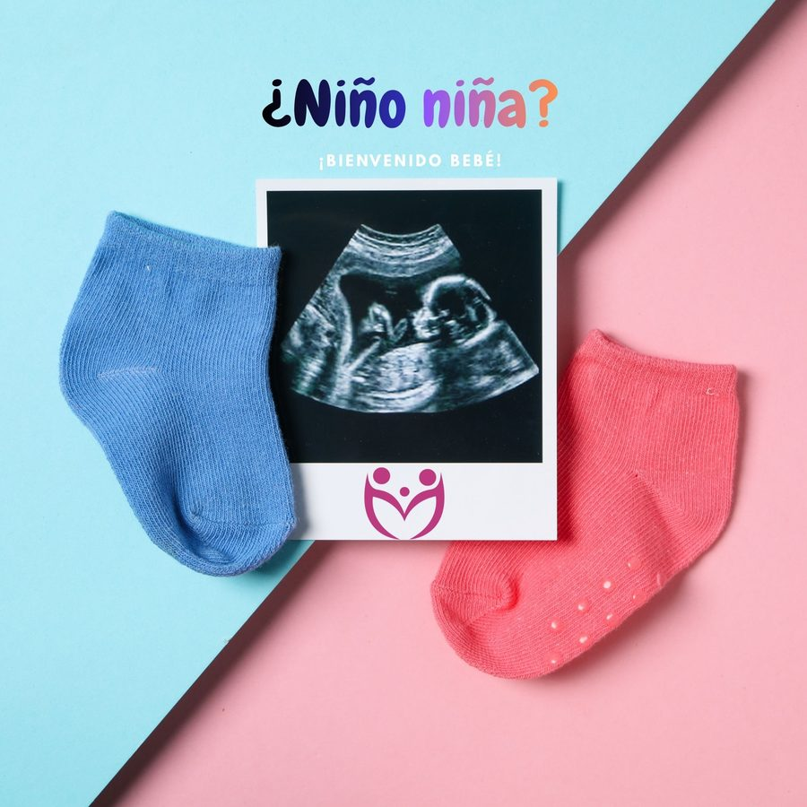
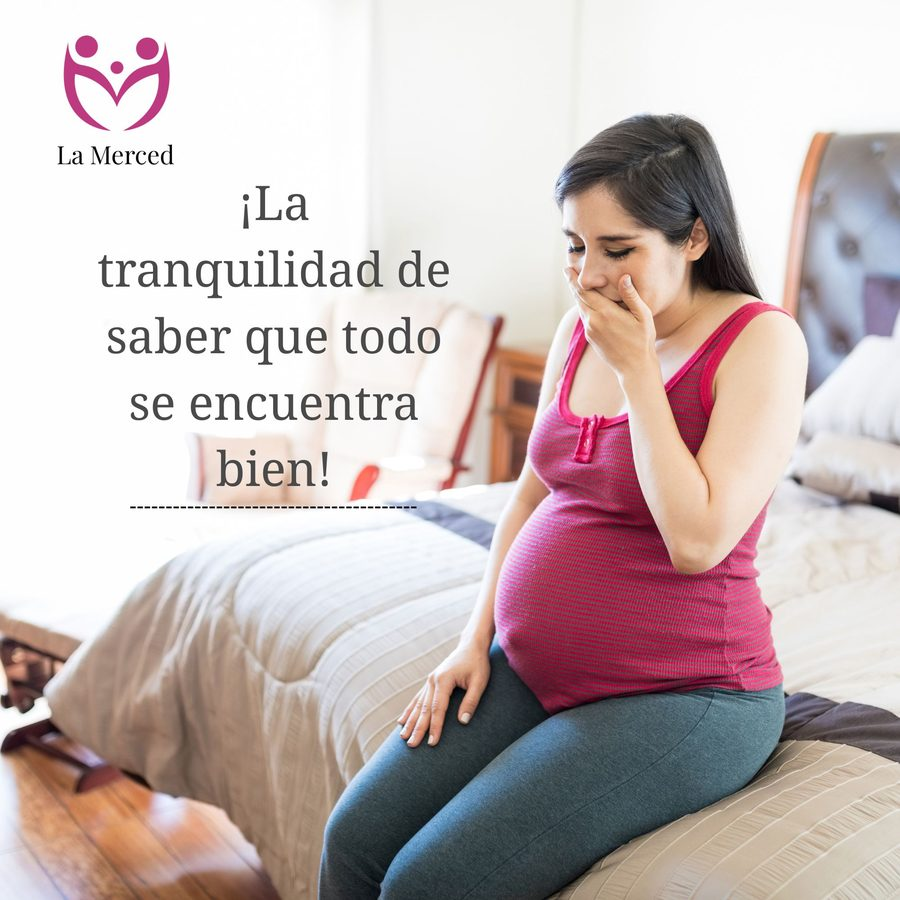
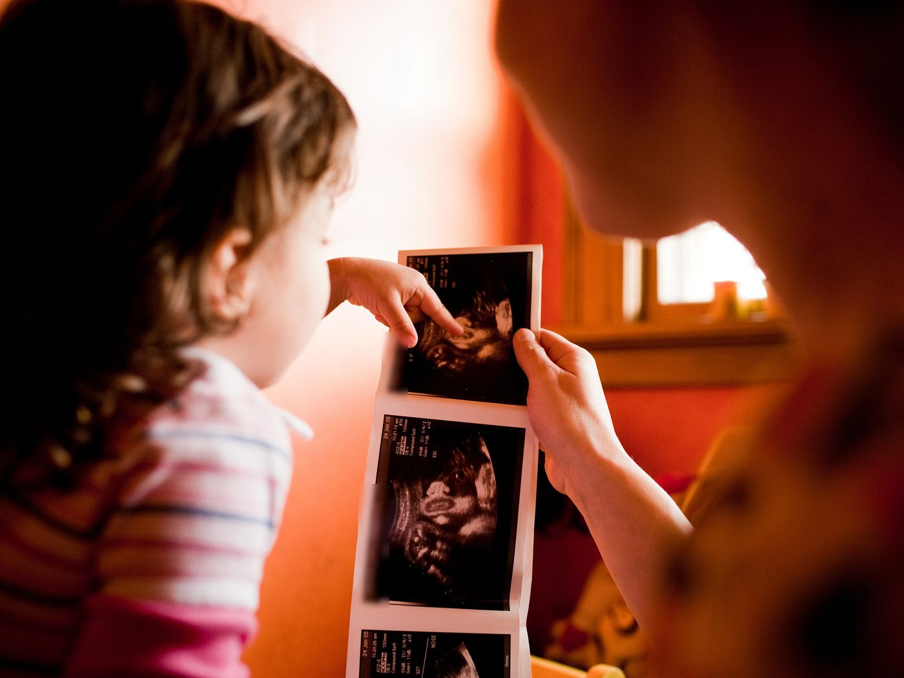

La noticia
Quiero saber el género de mi bebé
Alta precisión para saber el género del bebé, comprobado por miles de mamás que nos han visitado.
Agendar por WhatsAppUltrasonido 3D/5D, estructural fetal y Doppler maternofetal, confiable y seguro.
Elige y te atendemos por WhatsApp en minutos.

Alta precisión para saber el género del bebé, comprobado por miles de mamás que nos han visitado.
Agendar por WhatsApp
Esa duda que no te deja dormir tiene respuesta. Una malformación, un bebé que no crece como debería: verlo a tiempo abre opciones, y muchas condiciones se pueden atender desde el embarazo.
Agendar por WhatsApp
Porque no nos conformamos con hacer el ultrasonido. Buscamos la causa, el origen de lo que está pasando.
Dedicarnos solo a ultrasonido nos permite unir todo esto en cada estudio. Así le sacamos al cuerpo mucha más información de la que entrega una revisión de rutina, y el diagnóstico es mucho más certero.
3ra Avenida Km 192.5, Zona 2. Junto al Restaurante Rancho Rodríguez. Parqueo propio gratis.
Lun a Vie 8:00–16:00 · Sáb 8:00–17:00
Almuerzo: cerramos de 13:00 a 13:30
6ta Calle 13-51, Zona 3. Mediclínicas Fraternidad, Clínica 6. Una hora de parqueo gratis.
Lun a Vie 8:00–16:00 · Sáb 8:00–12:30
Almuerzo: cerramos de 13:00 a 13:30